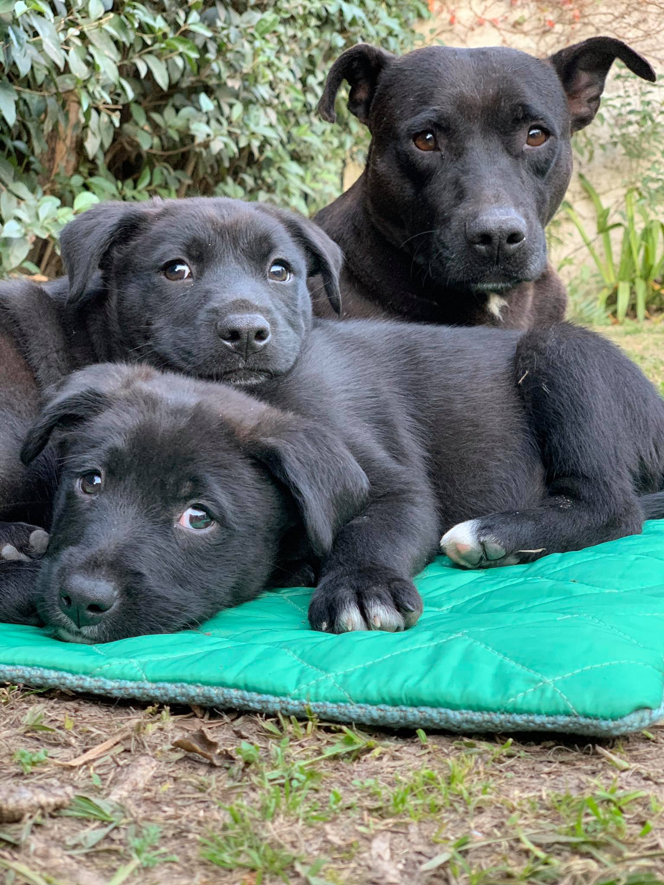

Quienes somos
Patitas Glew es una asociación civil sin fines de lucro abocada a velar por los perros callejeros de la ciudad de Glew. Alimentamos, ofrecemos atención médica, esterilizamos y protegemos a los mismos.
Nuestros pilares de trabajo son la concientización contra el abandono y el maltrato animal, al igual que difundir la esterilización como método de control sobre la población canina y felina.
¿Cómo trabajamos?
▶ Acción directa:
Diariamente alimentamos a los perros de la estación de Glew que están identificados con el cartel de Patitas, y al cualquier otro perro que se acerque hambriento. Sus viandas consisten en arroz soborizado para perros, alimento balanceado, menudos de pollo o carne en lata para perros. Así mismo limpiamos y llenamos los bebederos ubicados en lugares estratégicos para ellos.
Los llevamos a controles veterinarios y nos encargamos de esterilizarlos.
Atendemos heridas y enfermedades de cualquier perro sin hogar que llegue a la estación de Glew trasladándolo a una veterinaria o clínica.
Acudimos a emergencias por heridas o enfermedades en diversos barrios de Glew. Buscamos hogares responsables que adopten perros adultos y cachorros, haciendo un seguimiento en cada caso. Acudimos a las campañas de castración con perros de los alrededores.
Difundimos casos de perros robados/ extraviados/ en adopción a través de nuestras redes sociales. Asesoramos a los adoptantes y al público en general a fin de brindar apoyo en caso de adopciones y evacuando consultas, excepto sobre cuestiones de medicina veterinaria, que quedan reservadas a los profesionales del área.